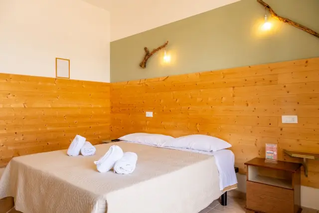

Chapter 5 of 11
Overlays
Everything that sits on top of the page – modal, side panel, popover, tooltip, preview card and command palette – is built on the native <dialog> element and popover: focus, Esc and the top layer come from the browser. Press any button here; with the Inspect button at the bottom right (or Alt+I), clicking a block shows the classes it uses.
Modal
A native <dialog>, opened by a real button via command="show-modal" and commandfor – no script of your own. Focus trap, Esc, the dimmed ::backdrop and returning focus to the trigger all come from the browser.
Watch out: Older browsers don't know command yet – include js/command-fallback.js once per page and every modal and side panel opens.

Classic double room
Hotel Seeblick · 24 m² · garden view · from €128 per night
Entrance variants
One modifier class on the <dialog> changes how it comes in. With reduced motion, each one appears instantly.
Full screen and dark – the lightbox variant
A lightbox is just a modal with .ncss-modal--fullscreen and .ncss-modal--dark. The large image only loads when it opens.
Closing: button, Esc, click outside
.ncss-dialog-close is the shared close area of every dialog – which icon sits inside is up to you. js/dialog-light-dismiss.js sets closedby="any" on every ncss dialog that has no attribute of its own: then a click on the dimmed area closes it too.
Watch out: Switch off click-outside for long forms – closedby="none" leaves only the buttons, nothing gets lost by accident.
Off-canvas side panel
The same <dialog>, but as a panel sliding in from an edge – for filters, a wish list or navigation. --start and --end are logical sides and swap by themselves in right-to-left writing.
Native popover
The HTML attribute popover puts an element into the top layer – no backdrop, no focus trap, Esc and clicking outside close it. A button with popovertarget toggles it. In NativeCSS, tooltip, hovercard, display preferences and toasts are all built on exactly this.
Note: There is deliberately no ncss class for a bare [popover] – the look here is page CSS. Where the browser supports anchor positioning, it sits below the button.
Reception, spa and restaurant keep different hours.
Opening hours
- Reception
- 7 am – 11 pm
- Spa & sauna
- 10 am – 9 pm
- Restaurant
- 12–2 pm and 6–10 pm
Tooltip
A short, text-only hint for a control – on pointer hover and on keyboard focus. In Chromium, interestfor handles everything natively; elsewhere js/tooltip.js steps in. Hover over the buttons or tab into them.
Watch out: A tooltip is a description, never the name. Icon buttons still need aria-label – and a tooltip never contains anything clickable.
Hovercard
A preview card that appears when a link is hovered or focused – with picture, text and links of its own. It stays open while pointer or focus are inside and flips to the other side when space runs out.
Watch out: In running text, use a <span> as the card and no line break before </ncss-hovercard> – otherwise a space appears before the punctuation.
At Hotel Seeblick you're welcomed by your host
Command palette
A modal search field above a list of links and actions, filtered as you type – opens from the button or with Ctrl+J or ⌘+J (J here, because K already opens the top bar search – another <ncss-command-palette>). Arrow keys select, Enter runs.
Without JS: The dialog still opens via command and shows every entry as a normal link.
Modal router
Links with a real href load their target page via fetch() into a shared modal, and the address follows along via history.pushState() – shareable, with a working back button. Without JavaScript it's simply a normal link.
Requirement: Every target page must also exist as a complete page on its own. The example runs in a frame so this page's address stays untouched (its content is German).
Open the example on its own – then you can watch the address change.
Image backdrop
A background of several photos that slowly cross-fade while gently zooming out – content in glass panels sits on top. Normally fixed page-wide behind everything; here as --contained inside one area. Without JS the first image simply stays.
Watch out: The images are pure decoration (alt="", aria-hidden). With reduced motion nothing changes automatically.


Welcome to the lake
Morning mist over the jetty, the mountains in the last light of evening – the glass panel stays readable while the picture carries the mood. Changes every 5 seconds, pauses in background tabs.
Dismissing notices
For everything that isn't a dialog – notices, banners, tags: data-ncss-dismissible on the element, data-ncss-dismiss on the close button. Focus doesn't drop into nowhere afterwards but lands on the next sensible target.
Tip: hidden on the button hides it without JS – no dead button; the script reveals it.
Sauna closed:
On Monday, 8 June, the lake sauna is closed for maintenance. The indoor pool is open.
New:
You can now reserve rowing boats right at reception.